دراسة الجدوى التمهيدية
مشروع ماكينة التعبئة والتغليف متعددة المسارات
مشروع تخرج طلاب قسم الميكاترونكس
جامعة ذمار
VFFS MULTI-LANE MACHINE
فهرس المحتويات
1. مقدمة المشروع
بسم الله الرحمن الرحيم
في ضوء التوسع الكبير في الصناعات والآليات، ومع تزايد الطلب على حلول التعبئة وتغليف السريعة والدقيقة، أصبحت تقنيات التعبئة والتغليف عاملاً أساسياً في تحسين جودة المنتجات وتقليل الهدر وزيادة كفاءة الإنتاج. أحد أبرز طرق التعبئة والتغليف ما يعرف بعبوات Stick Pack التي تستخدم لملء كميات صغيرة من السوائل أو المساحيق بطريقة عملية واقتصادية. رغم توفر هذه التقنية في السوق، تعتمد معظم خطوط التعبئة والتغليف الآلية على آلات مستوردة باهظة الثمن، أو تتم التعبئة والتغليف يدوياً مما يؤدي إلى محدودية الكفاءة أو الإنتاجية في الآلات التقليدية ذات المسار الواحد، مع ندرة الآلات المحلية الصنع متعددة المسارات.
1.1 فكرة المشروع
يهدف المشروع إلى تصميم وتصنيع نموذج أولي لماكينة تعبئة وتغليف آلية تعمل بتقنية متعددة المسارات (Multi-Lane) لتعبئة المنتجات (السوائل أو المساحيق) وتغليفها في عبوات صغيرة (stick packs). تعتمد الماكينة على أنظمة ميكانيكية وهوائية للتحكم في حركة الفيلم واللحام والتعبئة، بالإضافة إلى نظام تحكم آلي باستخدام PLC وشاشة لمس HMI ونظام IoT لسهولة التحكم في المشروع ومراقبته من أي مكان في العالم. لحل مشكلة التعبئة اليدوية أو التعبئة الآلية البطيئة وغير الفعالة، من خلال إنشاء آلة ذات قدرة إنتاجية عالية تعمل على مسارات متعددة متزامنة، مما يضاعف كمية الإنتاج ويوفر الوقت، مع ضمان دقة التعبئة وجودة اللحام.
1.2 المشكلة التي يعالجها المشروع
تواجه المصانع المحلية، خاصة الصغيرة والمتوسطة، عدة تحديات في عمليات التعبئة والتغليف:
- انخفاض الإنتاجية بسبب الاعتماد على آلات ذات مسار واحد أو التعبئة اليدوية
- ارتفاع تكاليف التشغيل بسبب استهلاك الوقت والمواد الخام
- عدم القدرة على المنافسة مع المنتجات المستوردة بسبب التكلفة العالية
- تقليل الاعتماد على الواردات وتشجيع التصنيع المحلي
1.3 أهداف المشروع
الأهداف التقنية
- تصميم ماكينة 3 مسارات متوازية لزيادة الإنتاجية
- تحقيق دقة تعبئة تصل فيها نسبة الخطاء إلى ±1%
- نظام تحكم آلي PLC + HMI
- تصميم وفق معايير الصناعة باستخدام مواد مقاومة للصدأ
الأهداف الإنتاجية
- تنويع المنتجات (سوائل ومساحيق)
- سرعة إنتاج 60-100 عبوة/دقيقة مقارنة بـ 30-40 في آلات المسار الواحد
- توفير 30% من وقت التعبئة مقارنة بالطرق التقليدية
- تقليل هدر المواد الخام بسبب دقة التعبئة العالية
الأهداف التسويقية
- توفير ماكينة بتكلفة أقل 40-50% من الآلات المستوردة
- التصنيع المحلي يوفر آلة عالية الكفاءة تنافس المستوردة بسعر أقل
- تقليل الاعتماد على الواردات وتشجيع التصنيع المحلي
- تمكين المصانع الصغيرة من المنافسة بمنتجات عالية الجودة
الأهداف التعليمية
- تطبيق المعرفة في ميكانيكا الحركة والكهروميكانيكا والتحكم الآلي
- إتقان النمذجة ثلاثية الأبعاد واستخدام برامج التصميم
- تطوير نظام تحكم منطقي قابل للبرمجة
- اختيار وتكامل المستشعرات والمشغلات
- إعداد الدراسات الفنية والسوقية والمالية والتشغيلية
- إدارة المشاريع والتوثيق المهني
- تحليل المخاطر وضمان الجودة
1.4 أهمية المشروع
الأهمية الاقتصادية
- توفير بديل محلي منخفض التكلفة للآلات المستوردة
- زيادة الإنتاجية عبر التعبئة والتغليف متعددة المسارات (3-5 مسارات تعمل بالتزامن)
- تقليل الاعتماد على العمالة اليدوية المكلفة وغير الدقيقة
- تمكين المصانع الصغيرة من المنافسة بمنتجات عالية الجودة
- تشجيع المستثمرين على دخول مجال تصنيع آلات التعبئة والتغليف
الأهمية الصناعية والبيئية
- تلبية احتياجات المصانع التي تعتمد على تعبئة Stick Pack
- ضمان جودة التعبئة، إغلاق محكم، توزيع دقيق للمنتج
- توفير قطع الغيار محلياً مما يسهل الصيانة ويقلل التكاليف
- رفع كفاءة المصانع المحلية
- تقليل الهدر من التعبئة اليدوية غير الدقيقة
- إمكانية استخدام مواد تعبئة صديقة للبيئة
- تقليل كمية البلاستيك المستخدم مقارنة بالعبوات الكبيرة
الأهمية الاجتماعية
- تلبية احتياجات المجتمع للعبوات الصغيرة المناسبة للاستهلاك اليومي للأفراد
- توفير خيارات تعبئة متنوعة تلبي احتياجات الأسر محدودة الدخل
- توفير منتجات سهلة الفتح والاستخدام للأطفال وكبار السن
- تعزيز ثقافة الاستهلاك الذكي عبر تقليل هدر الطعام
- خلق فرص عمل بتوفير وظائف فنية في مجال تصنيع وتشغيل وصيانة الآلات
2. الوصف الفني للمشروع
مكونات ماكينة التعبئة والتغليف
تتكون الماكينة من نظام للتعبئة ونظام للتغليف، كل منهما يحتوي على عدة مكونات أساسية تعمل معاً لإتمام عملية التعبئة والتغليف.
2.1 مكونات نظام التغليف
2.1.1 وحدة فك لفة الفيلم
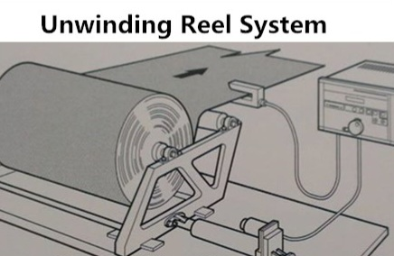محور يحمل لفة الفيلم مع نظام فرامل للتحكم في الشد ومستشعر نهاية اللفة
مبدأ العمل الفردي:
يوفر الفيلم الخام بشكل مستمر وبشد مناسب، مع إنذار مبكر عند نفاد المادة
مبدأ العمل في الماكينة:
يوفر المراحل التالية بشريط فيلم مشدود بطريقة مثالية، مما يضمن سلاسة عملية التعبئة والتغليف
2.1.2 وحدة الرقاص
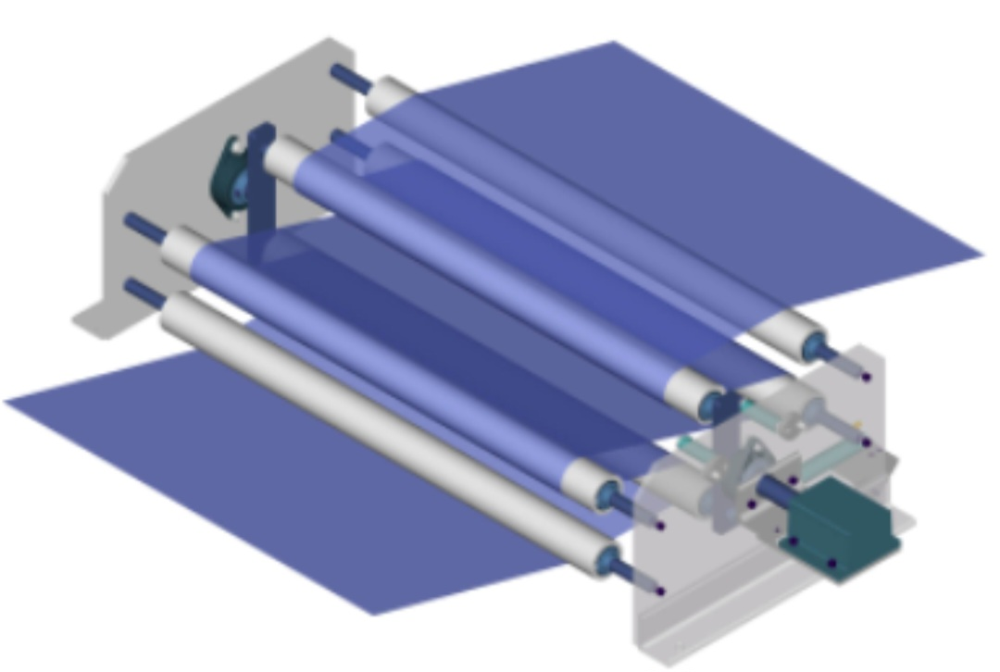ذراع متحرك يمتص التغيرات المفاجئة في شد الفيلم
مبدأ العمل الفردي:
يعمل كعازل للفيلم لامتصاص الصدمات الناتجة عن تغيرات سرعة سحب الفيلم
مبدأ العمل في الماكينة:
يضمن وصول الفيلم إلى مراحل التعبئة واللحام بشد مثالي يؤثر مباشرة على دقة حجم العبوة وجودة اللحام
2.1.3 وحدة التسجيل والتوجيه

بكرات توجيه مع محرك سيرفو ومستشعر ضوئي لقراءة علامة التسجيل
مبدأ العمل الفردي:
- • يلتقط المستشعر علامة التسجيل على الفيلم
- • ينشط محرك المؤشر لسحب الفيلم بعيداً عن علامة التسجيل
- • يعيد الحمل إلى وضع الاستعداد
مبدأ العمل في الماكينة:
يضمن تقدم الفيلم بدقة حسب المسافات المطلوبة لكل عملية طباعة أو قطع أو طي
2.1.4 وحدة الشق
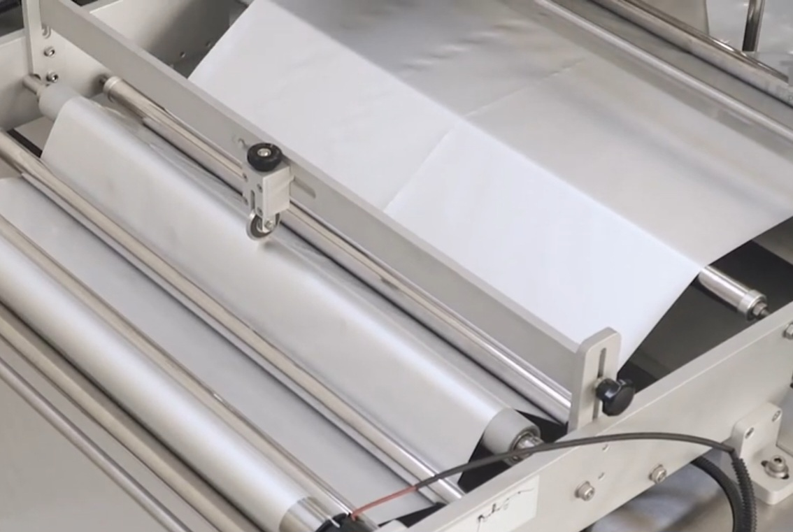عجلة قطع لشق الفيلم طولياً إلى شريطين متساويين
مبدأ العمل الفردي:
قطع الفيلم طولياً دون تمزق
مبدأ العمل في الماكينة:
يؤمن إعداد شريحي الفيلم لمرحلة الطي ودخول أنابيب التعبئة
2.1.5 وحدة الطي
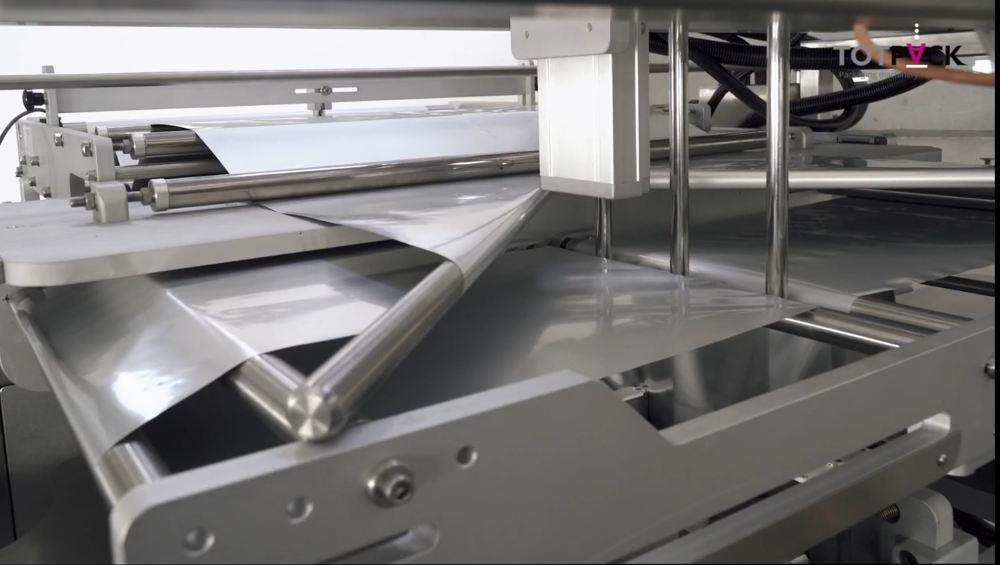مجموعة بكرات ترسم مساراً شبيهاً بحرف "V" لطي الفيلم
مبدأ العمل الفردي:
- • تقسيم الفيلم إلى طبقتين متماثلتين خاليتين من التجاعيد
- • الحفاظ على توازنهما وتوافقهما
مبدأ العمل في الماكينة:
يضمن وصول الطبقتين أمام رؤوس التعبئة في وقت واحد وبالدقة المطلوبة
2.1.6 وحدة الطباعة والتسجيل
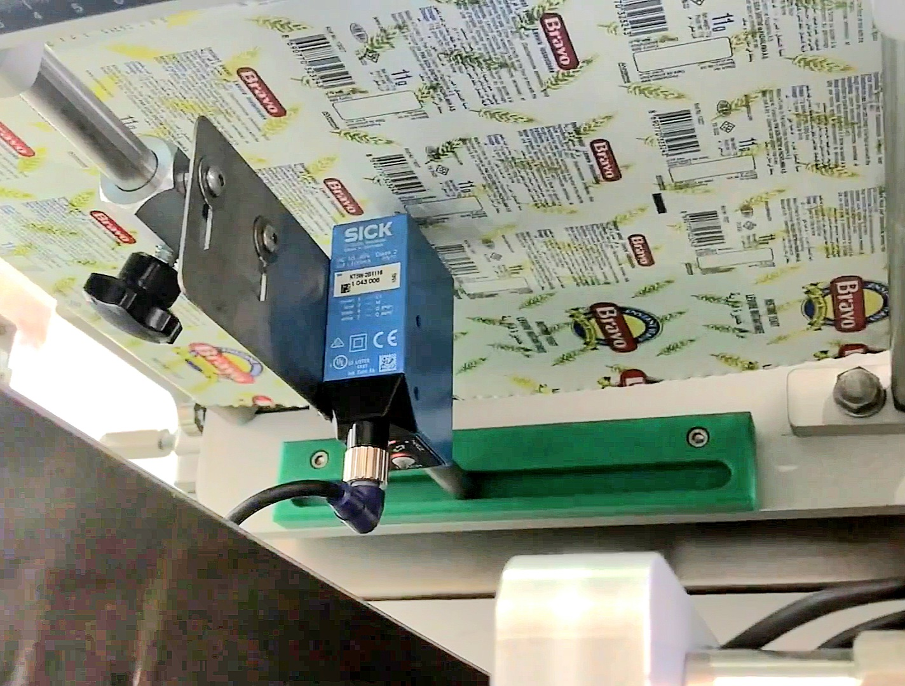نظام طباعة ذكي يطبع بيانات المنتج في الوقت الفعلي
مبدأ العمل الفردي:
- • يلتقط المستشعر علامة التسجيل ويرسل إشارة لـ PLC
- • ينشط الطابعة لطباعة البيانات في اللحظة المناسبة بالتزامن مع إشارة المستشعر
مبدأ العمل في الماكينة:
يضمن الطباعة المتزامنة والمكان المحدد قبل مرحلة التعبئة واللحام
2.1.7 وحدة اللحام العمودية

3 أزواج من ألواح التسخين لإنشاء لحام طولي محكم
مبدأ العمل الفردي:
تطبيق الحرارة والضغط لإنشاء لحام طولي محكم على طول الفيلم المشكل
مبدأ العمل في الماكينة:
بعد شق الفيلم ووضعه فوق بعضه، تقوم هذه الوحدة بلحام الحواف الطولية للفيلم مشكلة أنبوباً مغلقاً من الجانبين جاهزاً للتعبئة
2.1.8 وحدة السحب
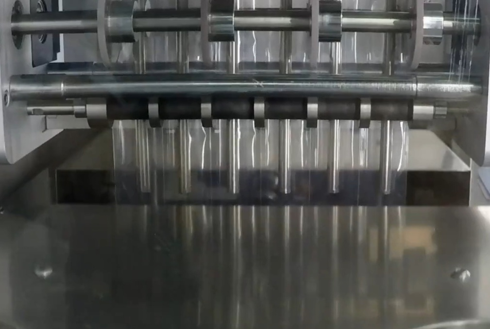زوج من الأعمدة المطاطية لسحب الفيلم عمودياً لأسفل
مبدأ العمل الفردي:
يسحب الفيلم لأسفل بدقة لضمان طول العبوة المطلوب
مبدأ العمل في الماكينة:
تضمن هذه الأعمدة تقدم الفيلم بسلاسة وثبات عبر مراحل التعبئة واللحام، مما يؤثر مباشرة على دقة حجم العبوة وجودة اللحام
2.1.9 وحدة اللحام الأفقية
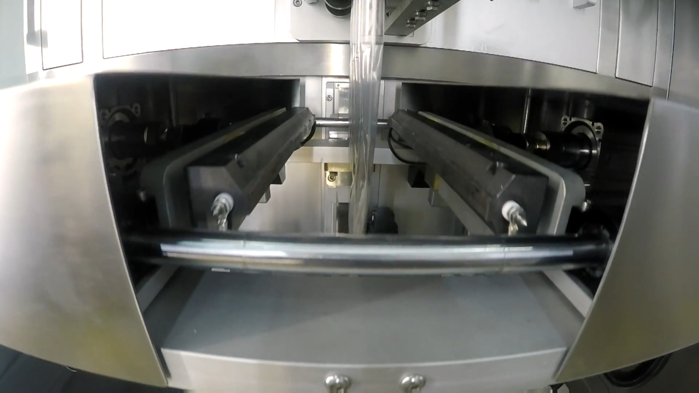زوج من ألواح التسخين المتحركة لإنشاء اللحام الأفقي
مبدأ العمل الفردي:
يخلق رابطاً عرضياً محكماً يعزل العبوات عن بعضها
مبدأ العمل في الماكينة:
يتم إغلاق العبوات من الأعلى بعد التعبئة، وإعداد العبوات التالية للإغلاق من الأسفل، مع عزل العبوات المعبأة عن بعضها
2.1.10 وحدة القطع
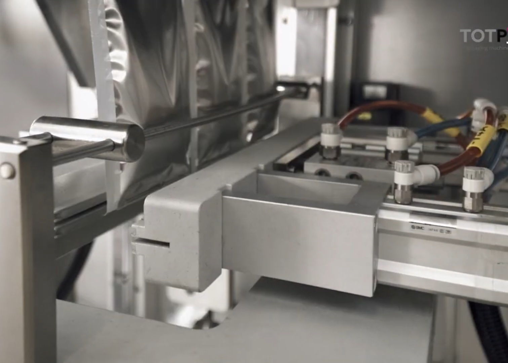سكين حاد يفصل العبوات المعبأة عن لفة الفيلم المستمرة
مبدأ العمل الفردي:
يفصل العبوات المعبأة بشكل نظيف ودقيق
مبدأ العمل في الماكينة:
يضمن فصل العبوات بشكل فردي بعد اكتمال عملية التعبئة والإغلاق
2.1.11 وحدة النقل الخارجي
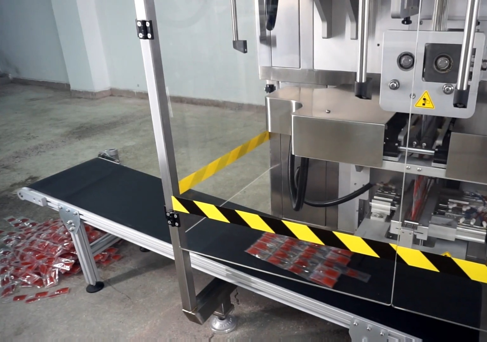حزام ناقل يستقبل العبوات المعبأة والمقطوعة
مبدأ العمل الفردي:
ينقل المنتجات النهائية بعيداً عن منطقة العمل
مبدأ العمل في الماكينة:
يضمن استمرارية تدفق الإنتاج ويمنع تراكم العبوات عند مخرج الماكينة
2.2 مكونات نظام التعبئة
2.2.1 خزان التغذية
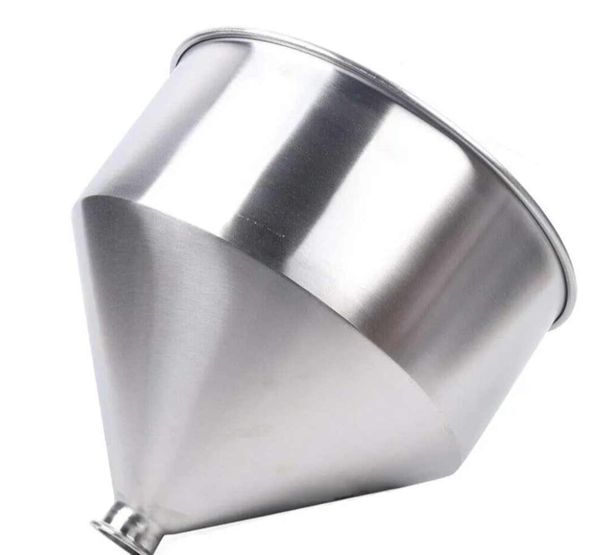وعاء مخروطي كبير من الستانلس ستيل لتخزين السائل
مبدأ العمل الفردي:
يعمل كخزان سائل مؤقت، يضمن توريداً مستمراً ومنتظماً لوحدة التعبئة
مبدأ العمل في الماكينة:
يضمن توفر سائل كافٍ للتعبئة المستمرة، ويمنع انقطاع تدفق المنتج للنظام
2.2.2 محرك سيرفو خطي
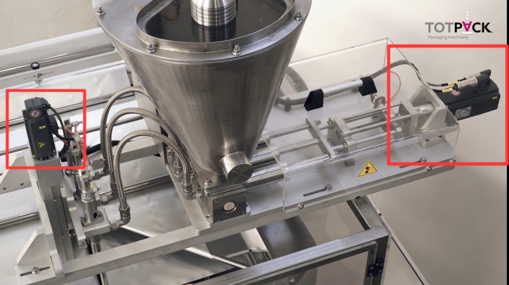محرك كهربائي يوفر حركة خطية دقيقة ومحكومة
مبدأ العمل الفردي:
يحول الطاقة الكهربائية إلى حركة خطية مباشرة دون حاجة لمكونات ميكانيكية وسيطة
مبدأ العمل في الماكينة:
يتحكم بحركة الأسطوانات وأنابيب التعبئة، مما يسمح بقياس كميات دقيقة جداً من السائل
2.2.3 أسطوانات المكبس
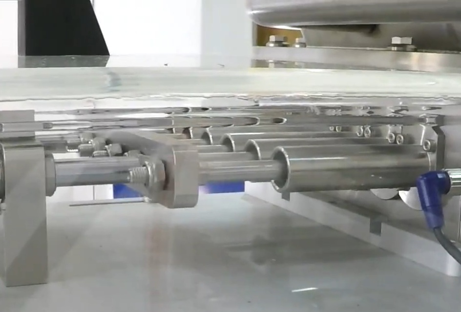أسطوانات معدنية دقيقة يتحرك بداخلها المكابس
مبدأ العمل الفردي:
عند سحب المكبس للخلف داخل الأسطوانة، يتم سحب السائل من خزان التغذية عبر صمام الشفط
مبدأ العمل في الماكينة:
تعمل بالتنسيق مع محركات السيرفو لقياس الحجم الدقيق للسائل المعبأ في كل عبوة
2.2.4 صمام توزيع السوائل
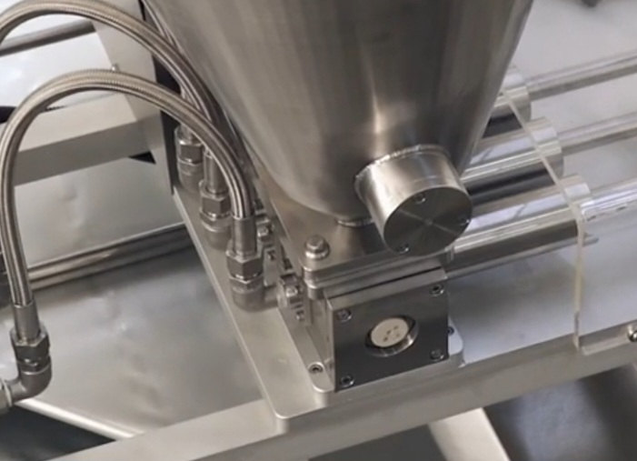قطعة توزع السائل من المضخة الرئيسية إلى أنابيب التعبئة
مبدأ العمل الفردي:
يعمل كمركز تجميع وتوزيع، يستقبل السائل من مصدر واحد أو أكثر ويقسمه إلى مسارات متعددة
مبدأ العمل في الماكينة:
يضمن حصول كل خط تعبئة على نفس كمية السائل في نفس الوقت
2.2.5 أنابيب التعبئة
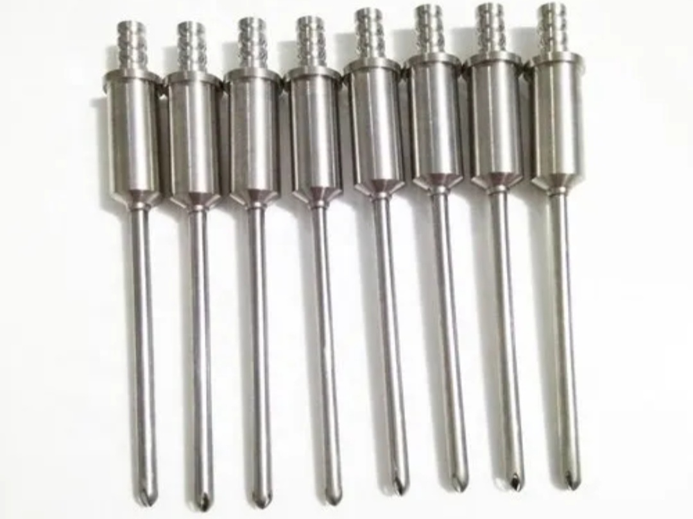أنابيب من الستانلس ستيل لتوصيل السائل داخل العبوات
مبدأ العمل الفردي:
توجيه السائل بدقة إلى العبوات، بتصميم يقلل من الرغوة أو تناثر السائل أثناء التعبئة
مبدأ العمل في الماكينة:
تتم إدخالها بين طبقات الفيلم الملتحم قبل عملية اللحام الأفقي
2.3 مكونات نظام التحكم والمراقبة
2.3.1 المستشعرات
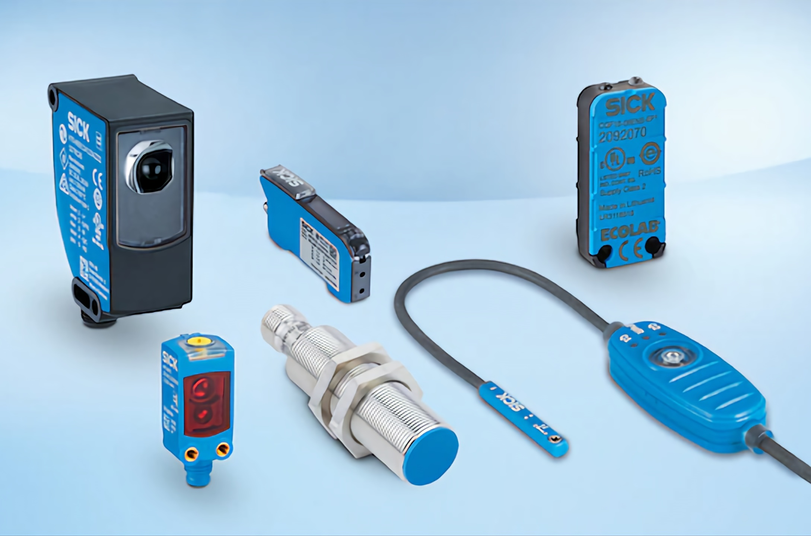مستشعرات القرب، علامة التسجيل، مستوى السائل، ودرجة الحرارة
فوائدها في الماكينة:
تعمل كـ"عيون" و"آذان" الماكينة، تزود نظام التحكم ببيانات مستمرة عن حالة الماكينة
2.3.2 نظام التحكم
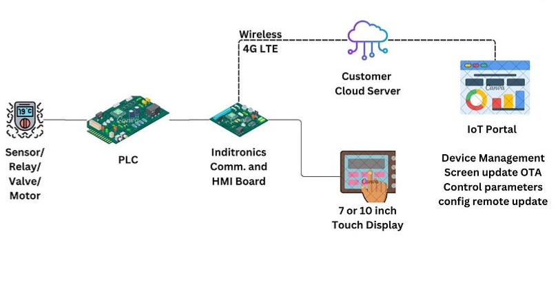PLC + HMI + IoT للتحكم الآلي والمراقبة عن بُعد
2.3.3 المحركات
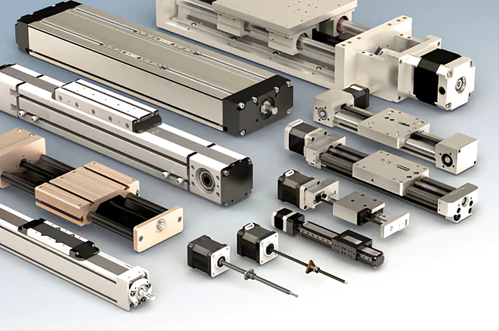محركات سيرفو وخطوة لتحريك المكونات المختلفة
2.3.4 النظام الهوائي
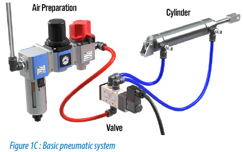أسطوانات هوائية وصمامات للتحكم في الحركة والإغلاق
2.4 مراحل سير العمل بأختصار
فك لفة الفيلم وتوجيهها عبر نظام اقصاء التوتر
تشكيل العبوة عبر شق الفيلم وطيه ولحام الحواف العمودية
اللحام الافقي وفي نفس الوقت التعبئة عبر ضخ السائل من خزان التغذية إلى أنابيب التعبئة
القطع لفصل العبوات المعبأة
إخراج المنتج عبر الحزام الناقل
2.5 أنواع السوائل التي يمكن تعبئتها
يمكن للماكينة التعامل مع مجموعة واسعة من المنتجات السائلة حسب نظام التعبئة المستخدم:
سوائل قليلة اللزوجة
- • الماء والعصائر
- • الحليب والزيوت الخفيفة
- • المشروبات الغازية
سوائل متوسطة اللزوجة
- • الصلصات الخفيفة
- • الشامبو والمنظفات السائلة
- • المستحضرات الصيدلانية السائلة
سوائل عالية اللزوجة
- • الكاتشب والمايونيز
- • الزبادي والعسل
- • الشوكولاتة السائلة ومعاجين الأسنان
3. الدراسة السوقية
تهدف هذه الدراسة إلى تحليل حاجة السوق اليمني لماكينات تعبئة السوائل وتقدير الطلب المحتمل وتقييم المنافسة واستكشاف فرص النجاح.
3.1 الفئة المستهدفة
بناءً على بيانات اتحاد الغرف التجارية والصناعية اليمنية والاتحادات الصناعية الإقليمية:
- • يوجد أكثر من 33,000 منشأة صناعية تعمل في اليمن
- • الصناعات تمثل 47% من الناتج المحلي الإجمالي
- • العديد منها متركز في قطاع تجهيز الأغذية والمشروبات
- • في المدن الرئيسية:
- - محلات العصير والمشروبات (تعبئة يومية 100-250 مل): صنعاء (250 محلاً)، تعز (180 محلاً)، عدن (150 محلاً)
- - ورش تعبئة المياه والمنظفات والزيوت العطرية: إب (70 منشأة)، الحديدة (50 منشأة)، ذمار (40 منشأة)
- - مشاريع منزلية صغيرة (عسل، ماء ورد، زيوت عطرية)
التوزيع الجغرافي للمنشآت المستهدفة
3.2 حجم الطلب المتوقع
| المحافظة | المنشآت المقدرة | معدل الاختراق | الماكينات المتوقعة |
|---|---|---|---|
| صنعاء | 250 | 2% | 5 |
| تعز | 180 | 2% | 4 |
| عدن | 150 | 2% | 3 |
| إب | 70 | 2% | 1 |
| الحديدة | 50 | 2% | 1 |
| ذمار | 40 | 2% | 1 |
| الإجمالي | 740 | — | 15 |
الطلب المتوقع بالمحافظات
3.3 المنافسون في السوق
المحليون
- • ورش حرفية تنتج ماكينات يدوية
- • سعر: $100-200
- • تفتقر للأتمتة والدقة
المستوردون
- • ماكينات Multi-lane VFFS
- • سعر: $12,000-20,000 قبل الجمارك
- • تصل إلى $16,000-28,000 بعد الرسوم
ميزتنا التنافسية
- • سعر البيع المقترح: $6,000-7,000
- • دعم فني محلي فوري
- • تصميم مخصص للسوق المحلي
مقارنة الأسعار التنافسية
3.4 فرص المشروع
الفرص الاقتصادية
- • تكلفة التصنيع المحلي: $4,000-5,000
- • البيع بسعر يوفر للعميل 60-75%
- • خدمة ما بعد البيع السريعة
الفرص السوقية
- • مواسم الذروة: رمضان، الصيف، الأعياد
- • شراكات مع الغرف التجارية
- • التركيز على المدن الكبرى
3.5 الخلاصة والتوصيات
• السوق اليمني في حاجة حقيقية لماكينة التعبئة الآلية
• نهدف لبيع 15 ماكينة في السنة الأولى بالتركيز على المدن الكبرى
• يُنصح بالشراكة مع اتحاد الغرف التجارية والنقابات الصناعية
• إمكانية توسيع السوق للدول المجاورة مستقبلاً
4. الدراسة التقنية
4.1 اختيار نوع المتحكم (PLC)
Siemens LOGO! 8 – 12/24 RCE
رقم القطعة: 6ED1052-1MD08-0BA2
المواصفات التقنية:
- • عدد المدخلات الرقمية: 8 مدخلات
- • عدد المخرجات الرقمية: 4 مخرجات
- • عدد المدخلات التماثلية: 4 مدخلات
- • جهد التشغيل: 12V أو 24V DC
- • دعم التوسع حتى 8 وحدات إضافية
المزايا:
- • اتصال عبر Ethernet LAN
- • اتصال السحابة عبر LOGO! Web Editor
- • دعم واجهات الويب
- • توافق كامل مع شاشات HMI من Siemens
- • يوفر استقراراً أكبر في اتصال البرمجيات
4.2 وصف نظام التحكم
يعتمد نظام التحكم على متحكم LOGO! 8.3 لتنفيذ تسلسل آلي لمراحل تشكيل العبوة وتعبئتها:
- • تشكيل الأنبوب من الفيلم البلاستيكي عبر طوق التشكيل، ثم لحام الحواف الجانبية بوحدة اللحام العمودية
- • إغلاق قاعدة العبوة الأولى باستخدام فكوك اللحام الأفقية
- • ضخ السائل في العبوة عبر أنبوب التعبئة
- • سحب الفيلم صفاً واحداً في المرة باستخدام نظام السحب (محرك أو بكرات)
- • إغلاق رأس العبوة السابقه وتشكيل قاعدة العبوة الجديده في نفس لحظة اللحام الأفقي
- • تكرار الدورة (لحام - تعبئة - سحب) تلقائياً مع تزامن دقيق
- • استخدام مستشعر ضوئي لقراءة العلامة المطبوعة على الفيلم وتحديد نقطة التوقف بدقة
- • يتم التحكم بتسلسل التوقيت بين هذه المراحل بدقة بواسطة البرنامج الداخلي في وحدة PLC
4.3 شاشة التشغيل والتحكم (HMI)
مواصفات الشاشة
- • الطراز: Siemens KTP700 Basic
- • شاشة TFT ملونة 7 بوصة
- • دقة العرض: 800 x 480 بكسل
- • اتصال عبر بروتوكول PROFINET
الوظائف
- • بدء أو إيقاف النظام
- • عرض حالة المستشعرات والعمليات
- • تنبيه المستخدم عند الأخطاء أو التوقف
- • عرض بيانات التشغيل والرسوم البيانية
4.4 المستشعرات المستخدمة
مستشعر التقارب الحثي
للتأكد من وصول المكبس إلى نهاية مسيرته بدقة
مستشعر علامة اللون
لاكتشاف العلامات السوداء المطبوعة على سطح الفيلم
المزدوج الحراري
لقياس درجة حرارة فكوك اللحام (PT100 RTD)
مستشعر اكتشاف اللفة
للتحقق من وجود لفة العبوات البلاستيكية
5. الدراسة التشغيلية
5.1 آلية التشغيل
تشغيل النظام
- • تشغيل مصدر الطاقة
- • تشغيل النظام من لوحة التحكم أو شاشة HMI
- • التأكد من ظهور الإعدادات صحيحة
- • ضبط المؤقتات وكميات الضخ حسب المطلوب
التشغيل التجريبي
- • اختبار حركة الفيلم والقطع والتعبئة الفارغة لمدة 3-5 دقائق
- • مراقبة انتظام العمل وغياب الأخطاء
- • تصحيح أي أعطال قبل تشغيل المنتج الفعلي
التوثيق والمتابعة
- • تسجيل عدد القطع المنتجة يومياً
- • توثيق أي عطل أو توقف حدث أثناء التشغيل
- • فحص سجل الصيانة عند حدوث مشكلة متكررة
5.2 متطلبات التشغيل
الطاقة الكهربائية
- • ضمان توفر مصدر طاقة مستقر (220-380 فولت حسب نوع الماكينة)
- • فحص جميع التوصيلات الكهربائية يومياً
الضغط الهوائي
- • ضمان ضغط الهواء بين 5-6 بار
- • فحص التسريبات في الأنابيب أو الوصلات
- • تنظيف مرشح الهواء بانتظام
مواد التعبئة
- • التأكد من تركيب البكرة بشكل صحيح وآمن
- • فحص الفيلم للعلامة المرجعية (Eye Mark)
- • ضمان سحب الفيلم بسلاسة دون انزلاق أو التواء
تنظيف أجزاء التلامس
- • تنظيف مضخات التعبئة والأنابيب والسكاكين يومياً
- • عدم ترك بقايا طعام أو سائل على الأجزاء المتحركة
- • استخدام مواد تنظيف غير أكالة
فحص المستشعرات
- • اختبار عمل مستشعر Eye Mark قبل البدء
- • التأكد من نظافة سطح المستشعر وخالي من الغبار
- • فحص مفاتيح الحد عند محرك القيادة أو مواضع التوقف
5.3 عدد العمال والمشغلين المطلوبين
مشغل الماكينة
العدد: 1
- • تشغيل وإيقاف الماكينة
- • ضبط إعدادات السرعة والتعبئة
- • مراقبة عمل المستشعرات والمضخات
- • التدخل عند الأعطال الفنية أو الميكانيكية
مغذي المواد الخام
العدد: 1
- • ملء خزان السوائل أو المساحيق
- • وضع لفة التغليف في مكانها
- • مراقبة مستوى المواد الخام داخل الخزان
- • استبدال الفيلم عند انتهاء اللفة
مجمع/معبئ المنتج النهائي
العدد: 1-2
- • استقبال العبوات بعد خروجها من الماكينة
- • ترتيبها في صناديق أو علب
- • التأكد من خلوها من التسريب أو التمزق
- • التعبئة الثانوية يدوياً أو باستخدام آلة تعبئة ثانوية
| نوع الماكينة | عدد العمال المطلوب |
|---|---|
| يدوية/شبه آلية | 2-3 عمال |
| آلية بالكامل | 1-2 عامل فقط |
| إنتاج مكثف > 60 عبوة/دقيقة | 3-4 عمال (مع عامل تعبئة وجودة) |
5.4 الصيانة الدورية
الصيانة اليومية
- • تنظيف السكاكين وبكرات اللحام من بقايا الفيلم أو المنتج
- • تنظيف رؤوس التعبئة (nozzles) والأنابيب لمنع الانسداد
- • فحص التوصيلات الكهربائية والهوائية
- • اختبار مستشعر Eye Mark والتأكد من استجابته
الصيانة الأسبوعية
- • تشحيم الأجزاء المتحركة (إن وجدت نقاط تشحيم)
- • فحص شد السكاكين القاطعة وتركيبها
- • معايرة المستشعرات Eye Mark و Limit Switches
- • تنظيف مرشحات الهواء من الغبار أو الزيت
الصيانة الشهرية
- • فحص جميع المحركات Stepper و Servo من حيث الحرارة والصوت
- • فحص سلامة الكابل الكهربائي (للتلف أو القطع)
- • قياس دقة التعبئة بميزان إلكتروني (لضمان ثبات الحجم)
- • التنظيف الشامل للماكينة (بما في ذلك داخل الإطار)
الصيانة ربع السنوية
- • إعادة معايرة جميع المستشعرات والأنظمة الإلكترونية
- • فحص حالة لوحة التحكم HMI وتحديث البرنامج إن وجد
- • تغيير أنابيب التغذية (tubing) إن كانت قديمة أو متصلبة
- • فحص كفاءة عناصر التسخين (heaters) واستبدال التالف
6. الدراسة المالية
6.1 تكلفة المشروع التقريبية
التكاليف الثابتة
| البند | التكلفة ($) |
|---|---|
| المكونات الميكانيكية | 2,000 |
| المكونات الكهربائية | 1,500 |
| نظام التحكم PLC+HMI | 800 |
| المستشعرات والمحركات | 700 |
| الإجمالي | 5,000 |
التكاليف المتغيرة
| البند | التكلفة الشهرية ($) |
|---|---|
| العمالة | 600 |
| الكهرباء | 150 |
| الصيانة | 100 |
| المواد الاستهلاكية | 50 |
| الإجمالي الشهري | 900 |
توزيع التكاليف
6.2 الإيرادات المتوقعة
سيناريو متحفظ
- • عدد الماكينات المباعة: 10 ماكينات/سنة
- • سعر البيع: $6,500 للماكينة
- • إجمالي الإيرادات: $65,000
- • هامش الربح: 30%
سيناريو متوسط
- • عدد الماكينات المباعة: 15 ماكينة/سنة
- • سعر البيع: $6,500 للماكينة
- • إجمالي الإيرادات: $97,500
- • هامش الربح: 35%
توقعات الإيرادات السنوية
6.3 تحليل الربحية
فترة استرداد رأس المال
معدل العائد على الاستثمار
صافي الربح السنوي المتوقع
7. تحليل المخاطر
تحليل المخاطر جزء أساسي من دراسة الجدوى لأي مشروع صناعي، حيث يساعد في تحديد المشاكل المحتملة التي قد تواجه ماكينة التعبئة ووضع استراتيجيات للتخفيف من تأثيرها.
7.1 الأعطال المحتملة
المشاكل الميكانيكية
- • مشاكل اللحام (ضعيف، غير مكتمل)
- • مشاكل تغذية الفيلم (تشويه، تمزق)
- • عدم دقة التعبئة
- • مشاكل القطع
- • تلف الأجزاء المتحركة
المشاكل الكهربائية
- • أعطال المستشعرات
- • مشاكل لوحات التحكم PLC
- • دوائر قصيرة
- • توقف المحركات
- • مشاكل التوصيلات الكهربائية
7.2 انقطاع التيار الكهربائي
التأثيرات المحتملة:
- • توقف الإنتاج المفاجئ
- • تلف المنتجات قيد التجهيز
- • تلف المعدات الحساسة
- • الحاجة لإعادة الضبط
الحلول المقترحة:
- • أنظمة الطاقة غير المنقطعة UPS
- • مولدات الطاقة الاحتياطية
- • أنظمة الإغلاق الآمن
- • بروتوكولات الطوارئ
7.3 مشاكل السوائل
المشاكل الشائعة
- • تغير اللزوجة
- • وجود جسيمات صلبة
- • تكوين الرغوة
- • التآكل
الحلول المقترحة
- • أنظمة تحكم في درجة الحرارة
- • مرشحات متقدمة
- • أنظمة تعبئة خاصة
- • مواد مقاومة للتآكل
7.4 أخطاء البرمجة والتحكم
المخاطر:
- • عدم تزامن العمليات
- • أخطاء في الإعدادات
- • توقف الماكينة غير المبرر
- • صعوبة في تشخيص الأعطال
الحلول:
- • اختبار شامل للبرمجيات
- • تدريب كافٍ للمشغلين
- • برامج صيانة وقائية
- • نسخ احتياطية من البرامج
8. References
[1] Vertical Form Fill Seal Machines. Viking Masek. link: https://vikingmasek.com/packaging-machine-resources/packaging-machine-blog/a-guide-to-vertical-form-fill-seal-machines
[2] VFFS Packaging Machine. Spack Machine. link: https://www.spackmachine.com/vffs-machines-guide-working-principle-types-filling-methods/
[3] VFFS Machines. GEA. link: https://www.gea.com/en/products/vffs-machines.jsp
[4] Vertical Form Fill Seal Machines. TNA Solutions. link: https://www.tnasolutions.com/products/packaging-equipment/vertical-form-fill-seal-machines/
[5] VFFS Baggers. Rovema. link: https://www.rovema-na.com/products/vffs-baggers
[6] Vertical Form Fill Seal. Bosch Packaging. link: https://www.syntegon.com/products/vertical-form-fill-seal/
[7] What is a VFFS Machine? All-Fill. link: https://all-fill.com/blog/what-is-a-vffs-machine
[8] How VFFS Machines Work. Matrix. link: https://www.matrixpm.com/packaging-machines/vffs/
[9] VFFS Machines - General Info. Omori Europe. link: https://www.omorieurope.com/en/packaging-machines/vffs
[10] VFFS Equipment Overview. Paxiom. link: https://www.paxiom.com/vertical-form-fill-seal-machines/
[11] VFFS Baggers. Weighpack. link: https://www.weighpack.com/vffs-machines/
[12] VFFS Sealing Jaws. Greener Corp. link: https://greenercorp.com/resource-blog/pressure-heat-adjustments-sealing-jaw-designs/
[13] Vertical Form Fill Seal (VFFS) Packaging Machines. BW Flexible Systems. link: https://www.bwfurlongandassociates.com/vffs-machines
[14] Understanding VFFS Technology. PAC Machinery. link: https://www.pacmachinery.com/products/vffs-machines/
[15] Vertical Form Fill Seal Machines Guide. PPMA. link: https://www.ppma.co.uk/products/vertical-form-fill-seal-machines.html
[16] VFFS Machines Types and Benefits. KBW Packaging. link: https://www.kbw-packaging.com/machines/form-fill-seal-machines/
[17] Flexible Packaging Equipment. Mespack. link: https://www.mespack.com/machines/vffs/
[18] VFFS Technical Overview. Mamata Machinery. link: https://www.mamata.com/vffs-vertical-form-fill-seal-machine.html
[19] VFFS Machine Video Demos. ILAPAK. link: https://www.ilapak.com/packaging-machines/vffs
[20] VFFS Automation Integration. Heat and Control. link: https://www.heatandcontrol.com/solutions/packaging/vertical-form-fill-seal/
[21] Small Footprint VFFS Machines. Nichrome. link: https://www.nichrome.com/machines/vertical-form-fill-seal-machines/
[22] Hygienic VFFS Designs. Hayssen Flexible Systems. link: https://www.hayssen.com/vertical-form-fill-seal
[23] Vertical FFS Machines with Servo. Fres-co System USA. link: https://www.fresco.com/products/vertical-form-fill-seal/
[24] Twin Tube VFFS Overview. SN Maschinenbau. link: https://www.sn-maschinenbau.com/en/vertical-form-fill-seal-machine-vffs/
[25] Vertical Form Fill Seal with Multi-Lane. Matrix Packaging. link: https://www.matrixpm.com/machines/vffs/
[26] VFFS Machine Applications. Viking Masek. link: https://www.vikingmasek.com/packaging-machines/form-fill-seal/vffs
[27] Sachet Packing with VFFS. Turpack. link: https://www.turpack.com/vffs-vertical-form-fill-and-seal-machine/
[28] Stick Pack and VFFS. Aranow. link: https://www.aranow.com/en/solutions/vertical-form-fill-seal/
[29] High Speed VFFS Machine. Rovema. link: https://www.rovema.com/packaging-machines/vertical-form-fill-seal
[30] Servo Controlled VFFS. Bosch Packaging. link: https://www.boschpackaging.com/vertical-form-fill-seal/
[31] Continuous Motion VFFS Systems. GEA Group. link: https://www.gea.com/en/products/vffs-machines.jsp
[32] Quad Seal Bag with VFFS. AlliedFlex. link: https://www.alliedflex.com/vffs-machinery/
[33] Vertical Sealing for Pouches. Omori Machinery. link: https://www.omori.eu/en/products/vffs/
[34] VFFS Machine Features and Specs. Fuji Packaging. link: https://www.fujipackaging.com/products/vertical-form-fill-seal/
[35] Integration of VFFS in Production Lines. IMA Group. link: https://www.ima.it/packaging/vffs/
خاتمة
تمثل دراسة الجدوى هذه خارطة طريق شاملة لتطوير مشروع ماكينة التعبئة والتغليف متعددة المسارات، والذي يهدف إلى تلبية احتياجات السوق المحلي من خلال توفير حل تقني متقدم وبتكلفة معقولة. يتطلع فريق المشروع إلى تحويل هذه الدراسة إلى واقع عملي يساهم في تطوير الصناعة المحلية ودعم الاقتصاد الوطني.
تم إعداد هذه الدراسة بإشراف د.محمد أحمد عبدالله المضواحي رئيس قسم الميكاترونكس وبمشاركة خبراء في المجال
________________________________________________________:فريق المشروع
- أسامة محمد الشرماء
- حسين سعيد مسعود
- سحر فيصل الطيبي
- عبدالناصر جمال السنباني عبدالناصر محمد سعد
- كمال عبدالوهاب الروافي ________________________________________________________
قسم الميكاترونكس - جامعة ذمار - 2025/2026
••••••••••تم بحمد الله••••••••••